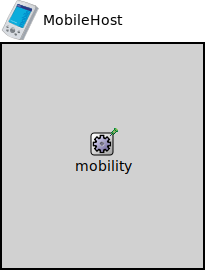

Package: inet.examples.mobility
MobileHost
compound moduleA host for demonstrating mobility models only -- it contains no protocol layers at all.
Usage diagram
The following diagram shows usage relationships between types. Unresolved types are missing from the diagram.
Used in
| Name | Type | Description |
|---|---|---|
| MoBANNetwork | network |
This network is exactly the same as baseNetwork existing among the examples of MiXiM, but the desired number of MoBAN coordinator modules have been added. Some nodes of type BaseNode use MoBanLocal module as their mobility module. Then those nodes will be considered as WBAN nodes. Those node have a parameter named "coordinatorIndex" that determines to which WBAN (coordinator) the node belongs. |
| MobileNetwork | network | (no description) |
Properties
| Name | Value | Description |
|---|---|---|
| networkNode | ||
| display | i=device/pocketpc |
Statistics
| Name | Title | Source | Record | Unit | Interpolation Mode |
|---|---|---|---|---|---|
| coordX | coord X | xCoord(mobilityPos(mobilityStateChanged)) | vector | linear | |
| coordY | coord Y | yCoord(mobilityPos(mobilityStateChanged)) | vector | linear | |
| coordZ | coord Z | zCoord(mobilityPos(mobilityStateChanged)) | vector | linear |
Source code
// // A host for demonstrating mobility models only -- it contains // no protocol layers at all. // module MobileHost { parameters: @networkNode(); @display("i=device/pocketpc"); @statistic[coordX](title="coord X"; source="xCoord(mobilityPos(mobilityStateChanged))"; record=vector; interpolationmode=linear); @statistic[coordY](title="coord Y"; source="yCoord(mobilityPos(mobilityStateChanged))"; record=vector; interpolationmode=linear); @statistic[coordZ](title="coord Z"; source="zCoord(mobilityPos(mobilityStateChanged))"; record=vector; interpolationmode=linear); submodules: mobility: <default("StationaryMobility")> like IMobility { @display("p=100,100;is=s"); } }File: examples/mobility/MobileHost.ned
 This documentation is released under the Creative Commons license
This documentation is released under the Creative Commons license